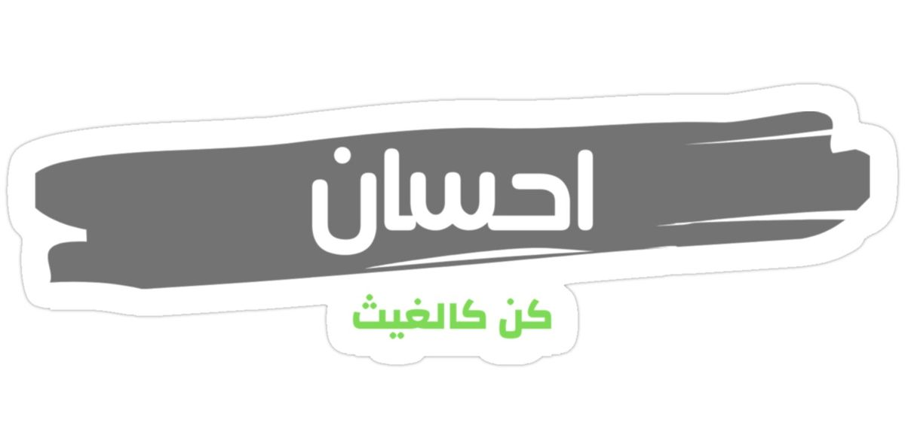
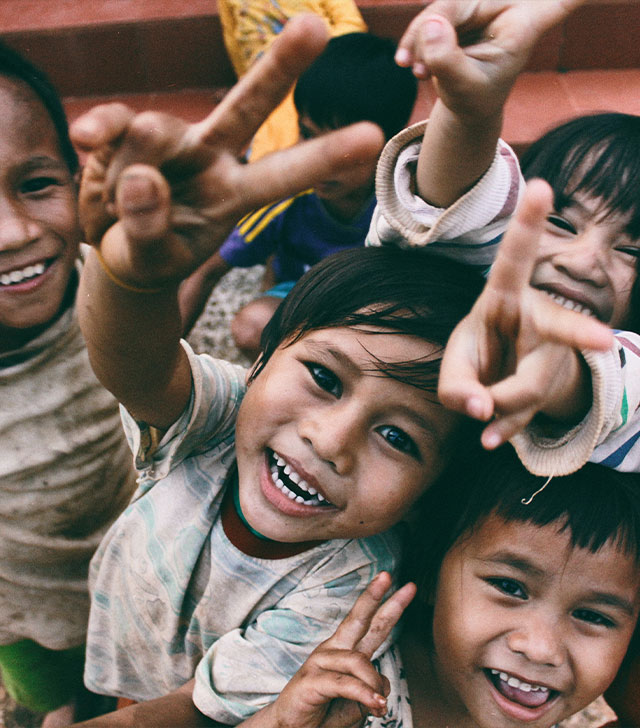

حب .. مودة .. عطاء
عن المؤسسة:منصة إلكترونية رسمية ، تُعنى باستقبال التبرعات و تقديم المساعدات النقـدية لمستـــــحـقيها، تجمع المـنصة تحـت مظلتـها كافـة الجمعيات والفرق الخـيرية التطوعية في المملكة العربية السعودية، وتتيح للأفراد والمؤسسات إمكانـية التبرع إلكترونيًا عبر قنوات الدفع الآمنة.

المميزات
آمنــــةجميع عمليات التبرع تتم عـبر اتصال آمــن و مشفر و لا يتم حفظ أي معلومات متعلقة بالبطاقات الائتمانية في المنصة.
سهلــــةإمكانية التبرع بخطوات سهلة وسريعة.
شاملـــة تضم كافة الفـــــرق التطوعــية والجمعيات الخـيريـة في المملكة.
موحــدةتمنع ازدواجية الصرف من أكثر من جهة للحالات المستفــــيدة.
المؤسسة تعمل مباشرةً من خلال مكاتبها وفروعها المنتشرة في أنحاء الجمهورية وكذا من خلال الجمعيات والمنظمات الشريكة في مجالات تنمية الشباب، التعليم، الصحة، سبل كسب العيش والاحتياجات الأساسية والبيئة.
المؤسسة قائمة على التطوع وتعمل منذ نشأتها على تنمية الشباب لبناء قدراتهم من أجل العمل على تنمية المجتمعات والاستجابة لاحتياجاتهم الإنسانية والإغاثية.
تتبني المؤسسة مبادئ العمل الإنساني الأساسية: الإنسانية والحيادية والعمل طبقا للاحتياج والاستقلالية، في جميع الأعمال التي تقوم بها وذلك للتأكد من أن تقديم المساعدات يتم دون التمييز طبقا للعرق، الدين، النوع أو أي اعتبارات أخري، تقدم مؤسسة صناع الحياة التدخلات الإنسانية والتنموية لمستفيدين الأكثر احتياجات مع الحفاظ على كرامتهم والتأكد من مشاركتهم.
